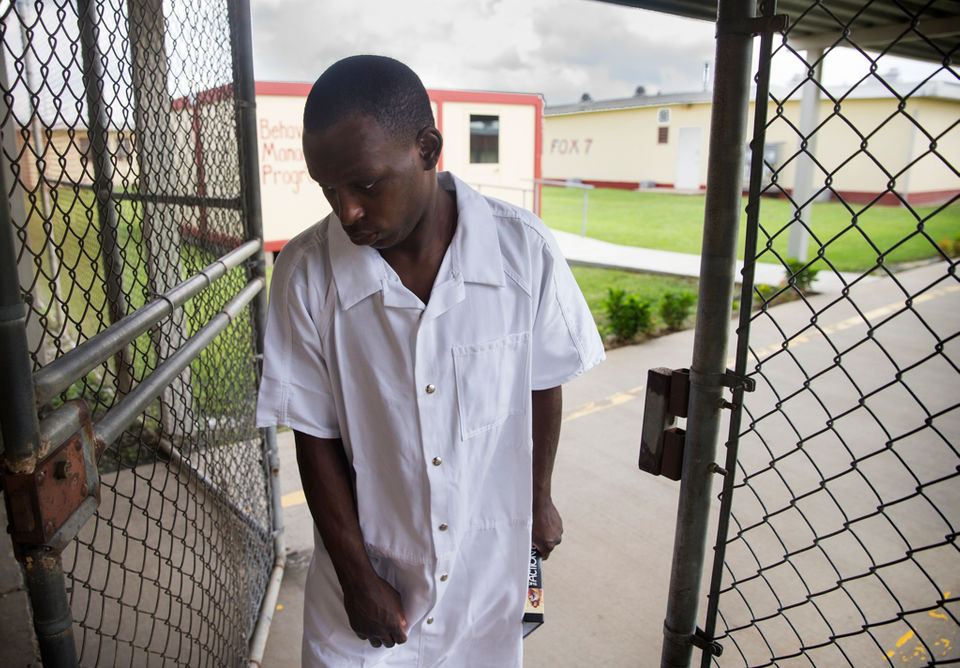
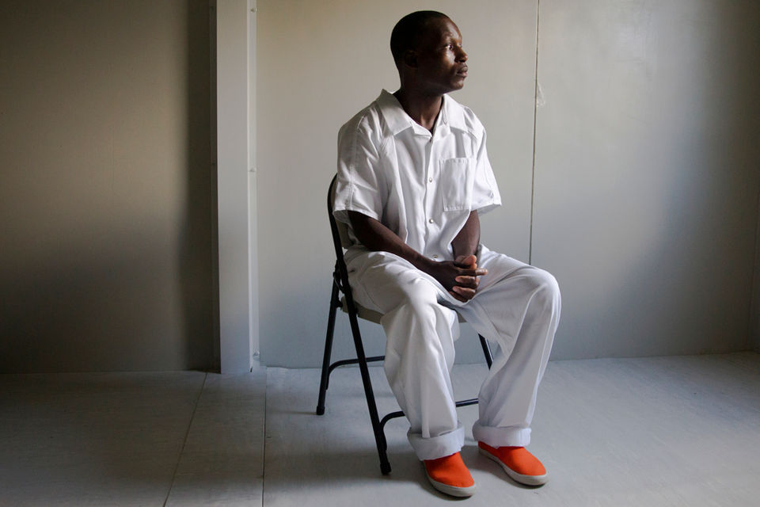
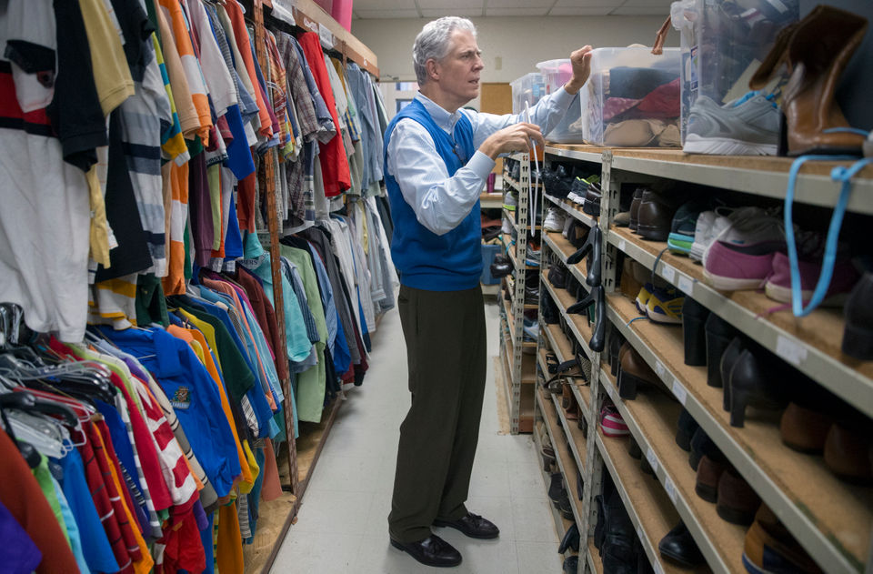
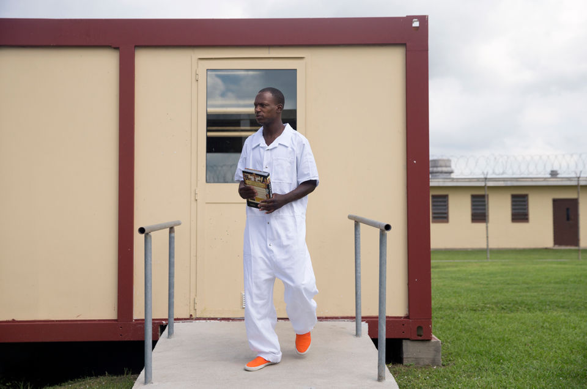
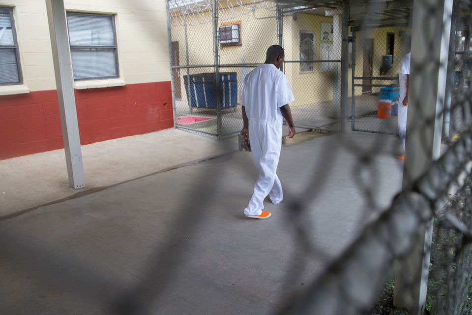

‘They are dumping them’: Foster child sent to shelter on 18th birthday, now in prison
By: Richard A. Webster
By: Richard A. Webster
October 17, 2018
October 17, 2018
Rashaad Piper was 8 years old when the state of Louisiana placed him in foster care following reports of abuse at his home. He remembers feeling relieved at the time. He thought he was finally going to be safe, that he was going to be cared for and given a second chance at happiness.
“I got tired of getting beat,” he said. “I wanted a better outcome.”
He never got that second chance. Piper stayed in the foster system for the next 10 years, cycling through more than a dozen placements, some as far as Ruston in northern Louisiana. Then, on the day of his 18th birthday, as required by law, he aged out of the foster system.
The state had no plan in place for his aftercare. There was no housing or financial assistance to help ease the transition. And though Piper had been diagnosed with a number of mental health disorders for which he was prescribed anti-psychotics, there were no medical follow-ups arranged or therapy appointments scheduled. No one to make sure he took his medications.
There was only one exit strategy: Piper, like many orphaned boys and girls before him, transitioned directly from foster care to Covenant House, the homeless shelter on the edge of New Orleans’ French Quarter.
“That was the roughest point of my life,” Piper said. “I was like an infant trying to make it in the world.”
Four years later, Piper is back in state custody as an inmate at Elayn Hunt Correctional Center in St. Gabriel. In May, he pleaded guilty to two counts of armed robbery for being one of four young men last year who attacked a pair of tourists in New Orleans attending a Unitarian convention.

Elayn Hunt Correctional Center in St. Gabriel. (Photo by Brett Duke, NOLA.com | The Times-Picayune)
A NOLA.com | The Times-Picayune investigation found that the two main attackers in the 2017 assault, Piper and Dejuan Paul, suffered from significant mental health issues. And yet, despite numerous opportunities for intervention, they did not receive the treatment they needed in the weeks and months leading up to the violent robbery. Advocates said this is the result of state budget cuts that have gutted Louisiana’s behavioral health infrastructure and policy decisions that have created obstacles to critical care.
Joy Bruce, executive director of CASA New Orleans, an organization that provides court-ordered mentors to foster children, said Piper’s story is neither unique nor particularly surprising. When the state assumes custody of children with mental health problems, then releases them to fend for themselves when they turn 18, it stacks the odds against them.
Within a year of aging out of the foster care system, 1 in 5 children are homeless and within two years, 1 in 4 are in prison, according to a 2017 report by the Louisiana State Task Force on Youth Aging Out of Foster Care.
“What the state has said is, ‘We’re going to be a better parent for you, Rashaad, than the family you came from. We can do a better job. We can make you into a better adult,’” Bruce said. “But then, on the night of your 18th birthday, we’re going to say your long-term plan is Covenant House?
“No. Covenant House is homelessness. That is not a transition plan.”
Still, it’s not an uncommon occurrence, said Jim Kelly, the Covenant House’s executive director.
“We will have institutions who will put kids in cabs and just send them to us,” he said. “They’ll come with paperwork and medicines, but still, not calling us in advance or anything.
“They are dumping them.”
Cynthia Foots, a case manager at Covenant House, said in a single week this summer, three foster children were dropped off on their 18th birthdays.
“One of the foster parents who brought them to me said, ‘I got another one coming to you next week,’” Foots said. “What is happening? Why aren’t you preparing for this child that’s been in your system for so long?”
The state took its first step to correct this problem in May, when the Legislature approved the extension of foster services for a limited number of children past the age of 18. But for many, like Piper, it’s too late, Bruce said.
“The sad thing is, for Rashaad, this is going to be the most secure placement he’s had in probably forever,” she said of his 5-year prison sentence.
Rashaad Piper was sent from the foster care system to a homeless shelter on his 18th birthday. He is pictured here at Elayn Hunt Correctional Center in St. Gabriel on September 7, 2018. (Photo by Brett Duke, NOLA.com | The Times-Picayune)
Louisiana has long been an outlier when it comes to its foster care system. Until the recent legislative session, it was one of five states that did not provide any support past the age of 18, and one of 25 that did not accept federal funds that triple state investment in the extension of those services.
The only post-foster care previously available in Louisiana was through the Young Adult Program, or YAP. The state initiative offered financial and case management support through the age of 21 but was shut down in 2013, when then-Gov. Bobby Jindal eliminated its $1.3 million funding.
Jindal also slashed the budget of the Department of Children and Family Services from nearly $187 million in 2010 to $147 million four years later. Gov. Edwards has been slowly adding to the budget, reaching $174 million in the current fiscal year, but the agency’s staff remains a third smaller than eight years ago.
Michelle Faust, a child welfare manager with DCFS, conceded that things have been difficult in recent years and not simply as a result of children being allowed to age out of the system. The state’s low Medicaid reimbursement rates make it difficult to find adequate medical and mental health care for young people, and housing remains an intractable issue.
“The waiting list for HUD housing is approximately 10 years,” she said. “There used to be priority for youth or single moms with children, and that no longer exists. It’s horrible.”
Still, allowing children to remain eligible for foster care services past the age of 18 takes precedence, she said. Without that, DCFS does not have the lawful authority to remain involved in any aspect of their care – whether housing or health – once they reach adulthood.
“Many of us have our own children and we know the perils they face,” Faust said. “I have an 18-year-old now and three other children who turned 18 and we know they are not ready to be on their own.”
The situation is even worse when children have significant psychological problems. Studies show that nearly 40 percent of foster care children are struggling with a mental illness and rates of post-traumatic stress disorder reach about 21.5 percent, five times the national average and higher than soldiers returning from war, according to the 2017 report.
Bruce said she has a brother-in-law who has been diagnosed with a number of mental health problems. Though he comes from a middle-class background that, she said, affords him access to good, comprehensive care, his family still struggles to meet his needs.
Imagine what it must be like, Bruce said, for an 18-year-old with the same problems, but who has been moved into and out of more than a dozen homes over a 10-year period and is suddenly kicked out of the only support system he has known.
“It teaches children you’re not valuable and what you do doesn’t matter. Your entire life has taught you that adults don’t care,” Bruce said. “They are set up to fail.”
Joy Bruce, executive director of CASA New Orleans, said few children are ready to be on their own at 18, let alone a foster child with mental health problems. (Photo by Brett Duke, NOLA.com | The Times-Picayune)
In May, the Legislature acknowledged the concerns of advocates such as Bruce and approved the extension of foster services for some children past the age of 18. Eligible teenagers must be enrolled as full-time high school students or working towards an equivalent degree.
This will allow young people to remain with foster parents or in group homes while they are attending school, instead of being turned out to the streets. They will also receive continued case management, educational and financial assistance and medical and mental health services. These services are extended until they graduate from high school or turn 21, whichever comes first.
On average, 183 children age out of foster care every year, of which an estimated 80 percent would likely benefit from the new provisions, according to the Department of Children and Family Services. To pay for the program — which went into effect upon approval — the state is putting up $1 million and using $2.8 million in federal dollars.
While this is a positive step, it is only a half-measure as currently designed, Bruce said. The new bill extends services past the age of 18, but young men and women are still being forced out of the foster care system. Although they can still receive case management or temporary housing, they are no longer under the jurisdiction of the courts. There is no judicial or third-party oversight to ensure they are receiving the support they require and to monitor their progress towards independent living.
To make this new extension of services meaningful, the state needs to change the Children’s Code to legally allow young people to remain in the custody of the state through the age of 21, Bruce said.
In response to Bruce’s concerns, DCFS Secretary Marketa Walters said the details of the program are still being crafted; the final plan will be based on best practices used across the country, she said. The Legislature created a taskforce to study expanding services to all children aging out of foster care, with no eligibility requirements, until the age of 21. The working group, which is partnering with the Annie E. Casey Foundation, must present its findings to the legislature by Feb. 1.
Such a proposal makes financial sense for the state, according to a study by the University of Chicago. Every $1 spent to extend care beyond the age of 18 saves $2 from increased estimated lifetime earnings of foster youth and reductions in teenage pregnancy, criminal behavior and homelessness, the study said.
“The truth is, it’s far less expensive than a life in prison or a life in a mental health institution or the cost of the crimes they commit against other people. All because they didn’t get the help they deserved when they were younger,” Walters said.
This is the second task force created by the state in the past three years to study how best to serve children aging out of the foster system. Bruce, who has participated in both groups, said she was part of a delegation that traveled several years ago to Houston to study best practices. In Texas, children can remain in the foster care system until the age of 21 and receive additional services through the age of 25.
While visiting the Houston Alumni Youth Center, a one-stop shop for current and former foster care children in need of support, Bruce said there were audible gasps when she mentioned Louisiana cuts young men and women off at the age of 18.
Mary Green, director of the HAY Center remembers the moment.
“Nobody could believe it because it doesn’t make any sense,” she said. “I can assure you none of those decision makers in Louisiana are cutting their kids off at 18.”
The HAY Center served 1,200 children last year on an annual budget of roughly $2.4 million, a mixture of federal, state and local funds, in addition to grants and donations. Mental health care is one of their priorities, Green said, making sure foster youth are connected to providers both as children and adults, and ensuring they remain enrolled in Medicaid so they can access those services.
“Texas is a conservative state,” Green said. “If Texas gets it, I would think other states could get it, too.”
Louisiana does get it, Walters said, which is why she has included in the department’s 2019-20 budget a line item to extend services to all children aging out of the foster system, not just those attending school.
“It’s heartbreaking to think we don’t find a home for them,” she said of children like Piper. “It’s not OK for kids to walk out at 18 and have nowhere to go. It’s heart-wrenching.”
Rashaad Piper said after he aged out of Louisiana's foster system at 18 he was like an "infant trying to make it in the world." He is pictured here at Elayn Hunt Correctional Center in St. Gabriel on September 7, 2018. (Photo by Brett Duke, NOLA.com | The Times-Picayune)
Piper was taken from his home and put in state custody as an 8-year-old boy in the spring of 2005, a few months before Hurricane Katrina. He entered the foster care system with his 1-year-old sister and 5-year-old brother. They were adopted within five years. Piper wasn’t so lucky.
Those who knew him at the time described a kind child, eager to please, but also as a deeply troubled adolescent struggling with a history of abuse, neglect and significant developmental disabilities. All of that, in addition to being a black male, drastically decreased the odds of him being adopted, Bruce said.
Of the roughly 250 children in state custody in New Orleans at the time of the storm, only five – including Piper – did not find permanent placement with a family and, eventually, aged out years later, Bruce said.
After his 18th birthday, Piper cycled in and out of Covenant House five times over 18 months, finally being told he couldn’t return because of behavioral problems. Kelly said out of all the kids he has dealt with in 20 years with the shelter, Piper was one of the most troubled.
“There was a lot of pain and trauma. That’s what’s happening every day in here. We’re dealing with kids who just break your heart and Rashaad was one of the hardest cases,” Kelly said. “He was trying. He knew he needed to get on meds, but it didn’t happen.”
One-third of the residents at Covenant House are on mental health medications and receive ongoing counseling.
Jim Kelly, executive director of Covenant House in New Orleans, sorts through donated clothing at the shelter Sept. 14, 2018 (Photo by Brett Duke, NOLA.com | The Times-Picayune)
The last place Piper lived before he aged out of the foster system was Boys Town. It was an ideal environment for him because it gave him structure and stability, Bruce said. There were strict rules and a regimented schedule that ensured Piper took his medications.
“He thrived in structure because it was more predictable and the way his brain works, he needed that predictability,” Bruce said.
Once Piper was forced to leave, he didn’t have anything to ground him. He stopped taking his medications and became unmoored. That was the most difficult time in his life and the moment things started to fall apart, Piper recalled recently in an interview at Hunt Correctional Center.
“A lot of things they require you to do at Boys Town is remember your meds. It was hard for me because of all the meds they had me on,” Piper said. “Then when I turned 18 they pretty much sent me to the Covenant House. I literally had to become a man and do everything on my own. I felt like I wasn’t at the maturity point to do all of that.”
Former foster care children are eligible to receive Medicaid services through the age of 26 so they can, in theory, continue to access the same type of medical and mental health care they received while in state custody. But statistics show without the support and assistance of medical professionals or caseworkers, they do not maintain their coverage.
In 2016, there were 584 foster care youth who aged out of the system and were enrolled in Medicaid. After a year, only 160 were still enrolled. Most stop taking their medications, just like Piper.
This should not come as a shock, Bruce said. The state is entrusting 18-year-olds with significant mental health problems to navigate the bureaucratic maze of Medicaid, find a provider on their own and then figure out how to arrange transportation to that provider. It is unrealistic and, often times, doomed to failure.
Bruce points to a young man formerly enrolled in CASA who had psychological disorders as severe as Piper’s. He was involved in an accident and prescribed antibiotics to stave off the threat of a deadly infection. Bruce said they told the teenager his life depended on him taking this medication. He said he understood, and that he had stored it in a safe place. When she asked where that safe place was located, he replied, “under a bench in Armstrong Park.”
That teenager was one of the four children who entered the foster system with Piper pre-Katrina and aged out of the system many years later because he wasn’t placed with a family. And like Piper, he too ended up in a homeless shelter and recently spent time in jail.
“If we allow kids to just tumble into this stream of foster care and say it’s somebody else’s children and it’s not my business, not my problem and that’s their mess-up, that’s when this happens,” Bruce said. “It’s when people aren’t willing to step up and say, ‘No, this is not OK and there’s no such thing as other people’s children.’”
Rashaad Piper carries a Bible given to him by Jim Kelly and Cynthia Foots from Covenant House. He is pictured at Elayn Hunt Correctional Center in St. Gabriel on September 7, 2018. (Photo by Brett Duke, NOLA.com | The Times-Picayune)
On June 24, 2017, Piper and three young men –Dejuan Paul, Nicholas Pogozelskiand Joshua Simmons – assaulted and robbed Tim Byrne and James Curran, who were attending a Unitarian conference in New Orleans. The attack was captured on surveillance footage and made national headlines.
On June 24, 2017, Piper and three young men –Dejuan Paul, Nicholas Pogozelskiand Joshua Simmons – assaulted and robbed Tim Byrne and James Curran, who were attending a Unitarian conference in New Orleans. The attack was captured on surveillance footage and made national headlines.
Piper was arrested three days later. When he appeared in Magistrate Court for his bond hearing, one of his arms was wrapped in bandages following a suicide attempt. He was later sent to the Elayn Hunt Correctional Center's mental health unit for a psychiatric evaluation, but was ultimately declared fit to stand trial.
“My client has been failed by the city, by the state,” Piper’s attorney, Michael Kennedy, said at the time. “His arm was in a wrap because last night in jail he started cutting himself with an eating utensil. There’s a complete lack of mental health care programs in the city. Irrespective of how this case works out, he’s a victim here and that could have been avoided if he was provided the necessary help people in his situation need.”
Byrne, who was critically injured in the attack, has made close to a full recovery. He agreed with Kennedy and sent a letter to the judge requesting leniency for Piper and the other attackers.
“Recidivism statistics show that incarceration doesn't stop criminal activity, but creates more of it,” Byrne wrote. “We all want to prevent Dejuan, Joshua, Nicholas and Rashaad from reoffending. In this case, I believe a different approach, one that … incorporates services for substance abuse, anger management and counseling, has the most chance of leading to the desired outcome.”
Byrne asked for probation. Criminal District Court Judge Camille Buras sentenced Paul to eight years in prison, Piper and Pogozelski to five and Simmons to three. Simmons also arrived at Covenant House from foster care on his 18th birthday. His family did not respond to a request for comment through his attorney.
During his interview with NOLA.com | The Times-Picayune at the state prison, Piper said after learning more about Byrne and Curran, and the organization they work for, he’s decided he wants to become a Unitarian.
“They are people, from my understanding, who don’t want vengeance or hate on anybody. They want a peaceful life,” he said. “God puts us in situations to where he sits us down and makes us rethink over stuff that we all did and think, how can we become better.”
Piper said that every day his mind wanders back to the moment he was taken from his family as a child. It was the right decision, he said, but what came after was nearly as difficult. He was abused, belittled, and made to feel worthless in many of his foster homes. Then he was thrown out on the street.
Piper accepts full responsibility for his crime, he said, and he doesn’t want to use his mental health disabilities as an excuse. But sometimes, he thinks about what could have been if, at some point during those 10 years in foster care, some family was willing to give him that second chance he yearned for as an 8-year-old boy.
He hopes it’s not too late to have a happy life, that it might still happen one day.
“I know I’m not perfect. But at the same time, I have people willing to vouch for me,” he said. “I know I’m a good person.”
Rashaad Piper at Elayn Hunt Correctional Center in St. Gabriel on September 7, 2018. (Photo by Brett Duke, NOLA.com | The Times-Picayune)
This story is part of “A Fragile State”, a series by NOLA.com | The Times-Picayune's watchdog team examining Louisiana's broken mental health care system.
Want to share your experiences in the system? Tell us your story here.
Read more: Louisiana’s mental health care system is broken. Here’s how we got here.